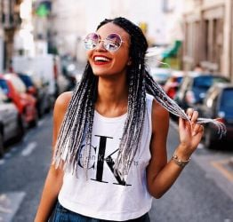
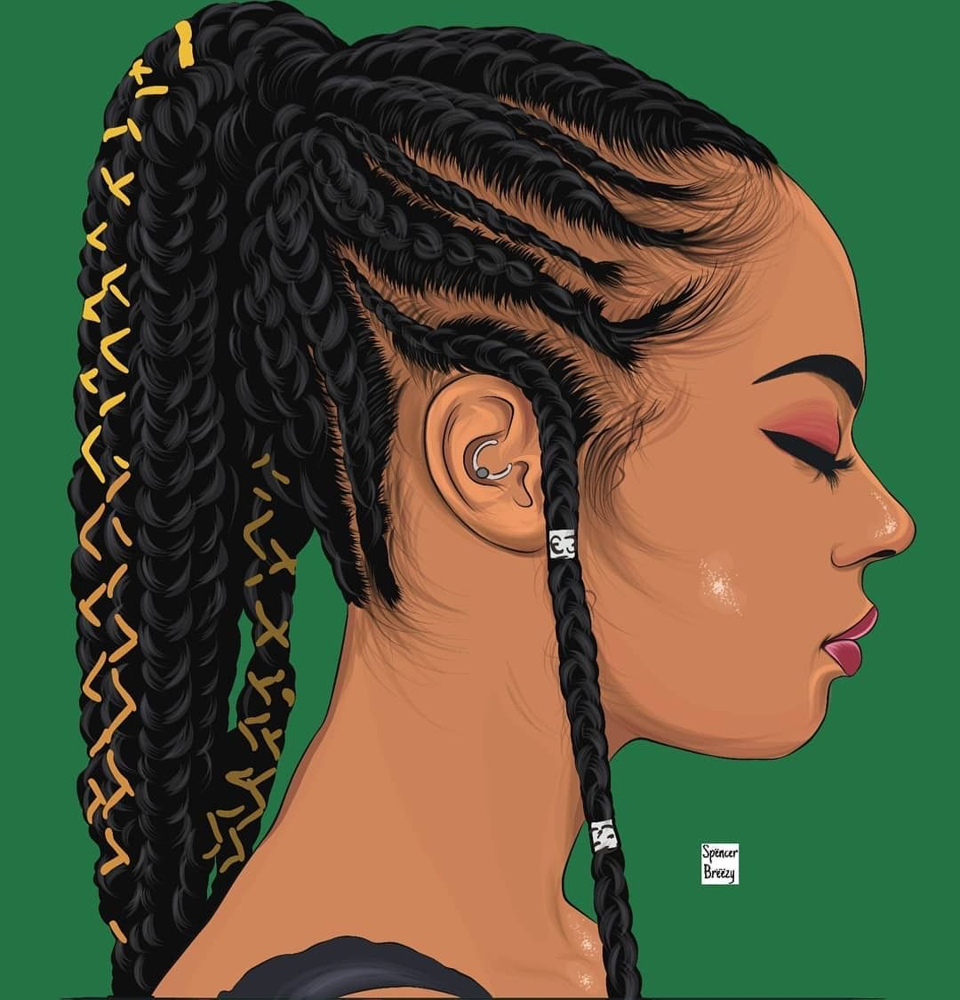
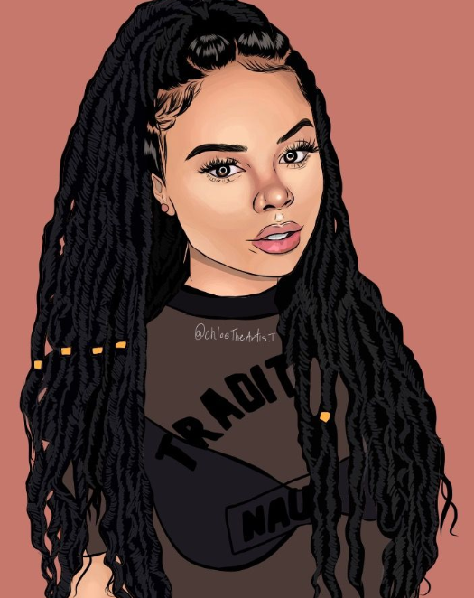
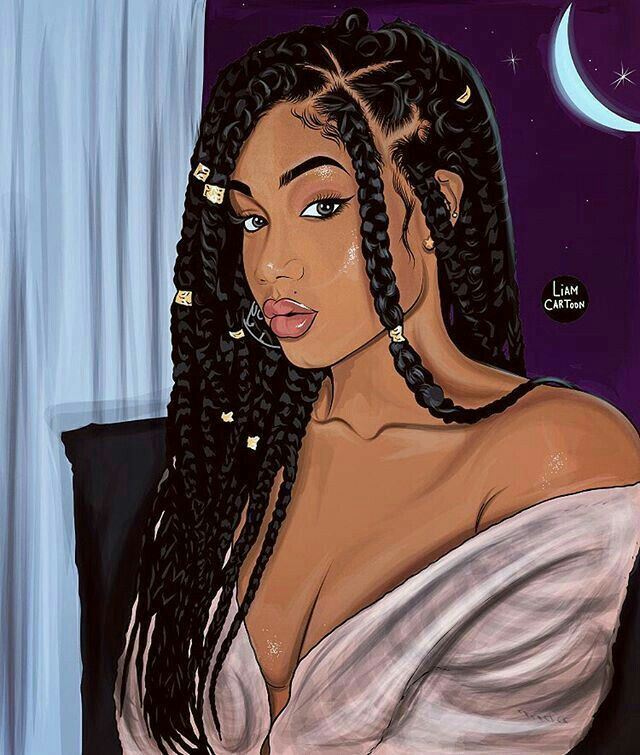
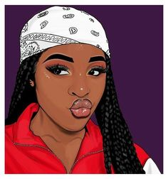

Olá, Qual é seu desejo
< Giuline Sabrina >
Estudio Vida Black
Nós acreditamos que a beleza é um jeito de se descobrir e encontrar jeitos diferentes de se sentir bem. No Vida Black, Temos diverços estilos de cabelos, independente da sua curvatura o nosso objetivo é mostrar que podemos ter lindos cabelos. Não deixe para outro momento, agende agora mesmo seu horário.
- Tranças box braids ponta amarrada
- Tranças box braids com ponta fina
- Tranças chanel de bico
- Tranças nagô com entrelaçamento
- Tranças box braids com rabinho
- Tranças crochet braids
- Tranças twist
Beleza Afro Estilo Total
- Jumbo Tranças
- Jumbo Cacheado
- Jumbo Americano
- Entralace
- Crochet brands
Cabelos





web